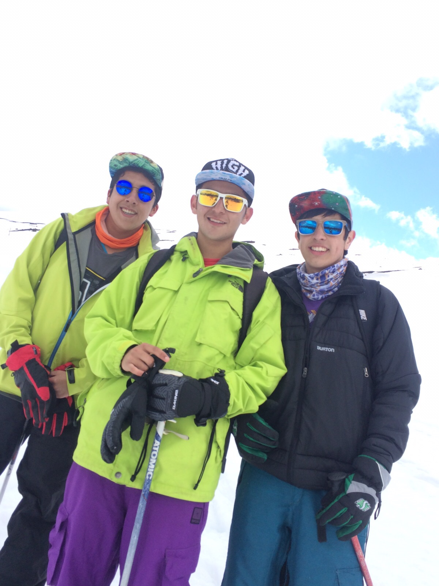
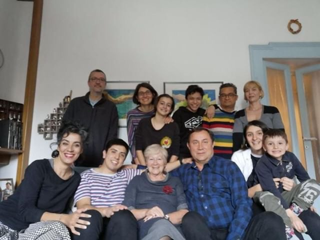
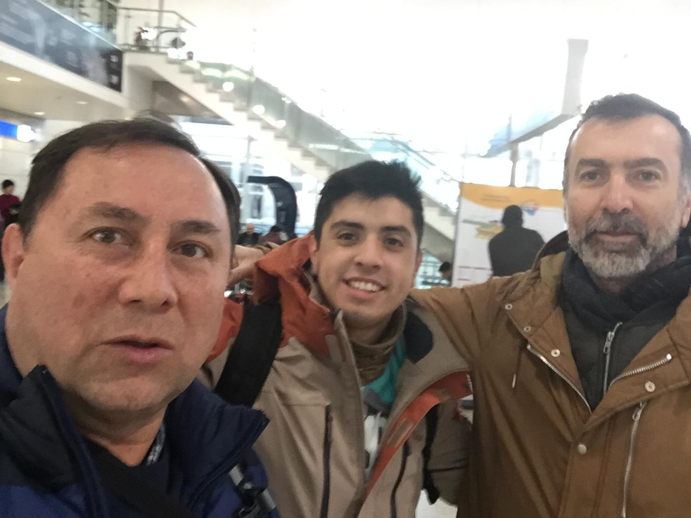

Me llamo Gustavo Pardo.
Tengo 20 años.
Estudio Ing. Civil Industrial Men. Informática.
Al comienzo queria estudiar Ing. Civil Biotecnologia pero me di cuenta que lo mio no es la investigacion.
Estudie en el Colegio Bautista de Temuco, 12 años para ser exacto. El colegio Bautista como dice su nombre es religioso, evangelicos. Yo me considero Cristiano, pero muy influenciable por muchas otras religiones existentes.
Del colegio pude conocer personas excepcionales. A mis queridos amigos, los pocos que tengo...
Estos son 2 de ellos. El Monsa y El tima.

Bueno, soy una persona de jugar mucho videojuegos, con quien sea. Por lo general con mis amigos.
Me encantan los deportes.
Practico 2 con mucha frecuencia (Uno cuando es la temporada).
Estos son jugar Futbol, y Skiar.
Tambien me encanta ver peliculas y leer libros.
Mi libro favorito es EndGame. Pero al los que le tengo mas cariño son los de Percy Jackson. Tambien me encanta viajar. Y los Idiomas.
Ultimamente he viajado solo con mi Padrino. El tiene amigos por muchas partes del Mundo y tambien una familia Italiana, que no es de sangre pero es casi como si lo fuera.
Esta es la Famiglia.
Y este un amigo de Grecia
Dentro de mis habilidades, considero que soy una persona muy sociable, por lo que trabajar en equipo nunca se me hace complicado.
No me gusta aprovecharme de los demas en ningun ambito. Por lo que para los trabajos siempre trato de aportar mucho.
Siempre que puedo ayudo a los que lo necesitan, a pesar de que me pueda traer consecuencias.
Trato de ser una persona culta. Saber y Conocer de cosas que por lo general a mi edad nadie se interesa.